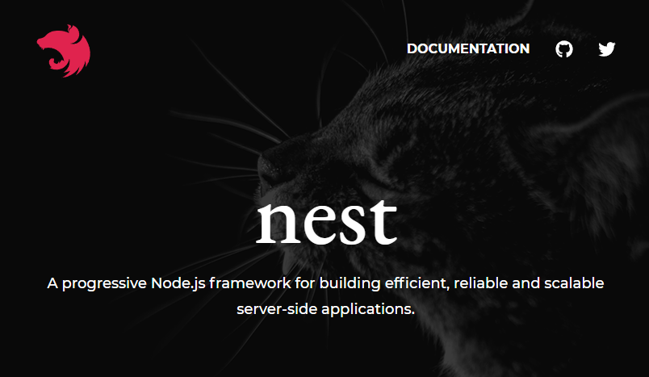
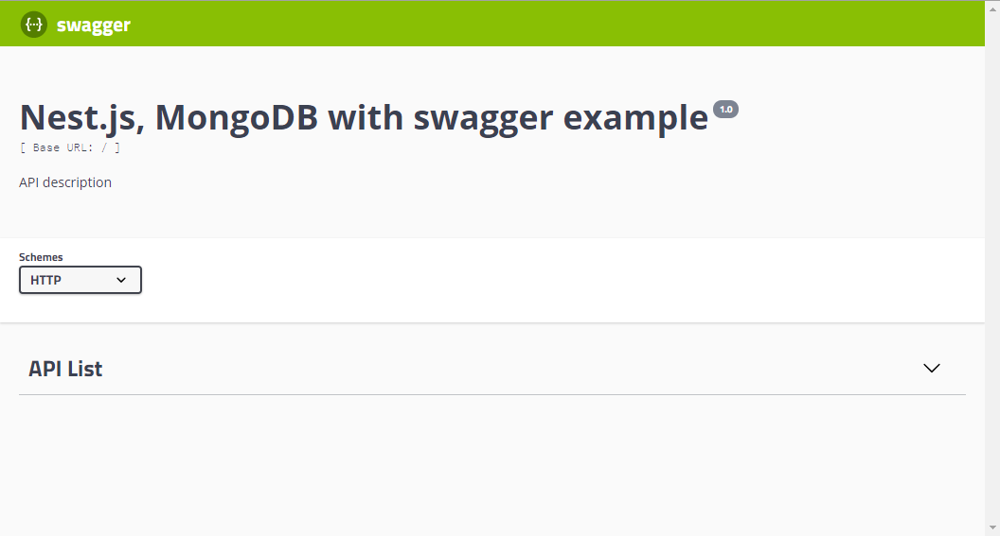
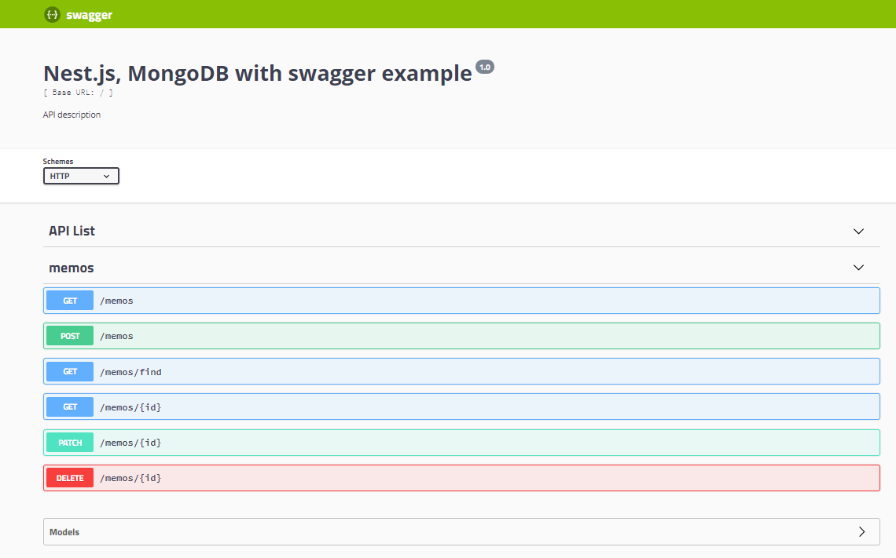
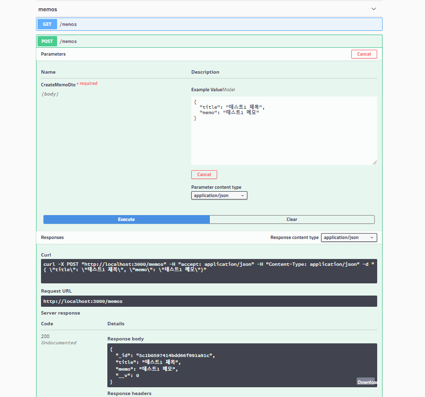

<!DOCTYPE html>
<html>
<head><meta name="generator" content="Hexo 3.8.0">
    <meta charset="utf-8">

    

    
    <title>NestJS와 MongoDB 그리고 Swagger | devtory</title>
    
    <meta name="viewport" content="width=device-width, initial-scale=1, maximum-scale=1">
    
        <meta name="keywords" content="Backend,Express,Typescript,Nest">
    
    <meta name="description" content="NestJS와 MongoDB 그리고 Swagger 정리 목적으로 작성한 글 입니다   목표 : NestJS와 MongoDB를 이용해 간단한 API를 만들고, Swagger를 적용하여 API 문서화 해보기  참고 Nest.js 공식문서 : https://docs.nestjs.com  Nest.js ? Nest.js는 Express기반에 서버사이드 프레임워크로">
<meta name="keywords" content="Backend,Express,Typescript,Nest">
<meta property="og:type" content="article">
<meta property="og:title" content="NestJS와 MongoDB 그리고 Swagger">
<meta property="og:url" content="https://devtory.github.io/2018/12/02/NestJS와 MongoDB 그리고 Swagger/index.html">
<meta property="og:site_name" content="devtory">
<meta property="og:description" content="NestJS와 MongoDB 그리고 Swagger 정리 목적으로 작성한 글 입니다   목표 : NestJS와 MongoDB를 이용해 간단한 API를 만들고, Swagger를 적용하여 API 문서화 해보기  참고 Nest.js 공식문서 : https://docs.nestjs.com  Nest.js ? Nest.js는 Express기반에 서버사이드 프레임워크로">
<meta property="og:locale" content="ko">
<meta property="og:image" content="https://devtory.github.io/2018/12/02/NestJS와%20MongoDB%20그리고%20Swagger/nest_js.png">
<meta property="og:updated_time" content="2018-12-20T03:20:35.957Z">
<meta name="twitter:card" content="summary">
<meta name="twitter:title" content="NestJS와 MongoDB 그리고 Swagger">
<meta name="twitter:description" content="NestJS와 MongoDB 그리고 Swagger 정리 목적으로 작성한 글 입니다   목표 : NestJS와 MongoDB를 이용해 간단한 API를 만들고, Swagger를 적용하여 API 문서화 해보기  참고 Nest.js 공식문서 : https://docs.nestjs.com  Nest.js ? Nest.js는 Express기반에 서버사이드 프레임워크로">
<meta name="twitter:image" content="https://devtory.github.io/2018/12/02/NestJS와%20MongoDB%20그리고%20Swagger/nest_js.png">
    

    
        <link rel="alternate" href="/" title="devtory" type="application/atom+xml">
    

    

    <link rel="stylesheet" href="/libs/font-awesome/css/font-awesome.min.css">
    <link rel="stylesheet" href="/libs/titillium-web/styles.css">
    <link rel="stylesheet" href="/libs/source-code-pro/styles.css">

    <link rel="stylesheet" href="/css/style.css">

    <script src="/libs/jquery/3.3.1/jquery.min.js"></script>
    
    
        <link rel="stylesheet" href="/libs/lightgallery/css/lightgallery.min.css">
    
    
        <link rel="stylesheet" href="/libs/justified-gallery/justifiedGallery.min.css">
    
    
    


</head>
</html>
<body>
    <div id="wrap">
        <header id="header">
    <div id="header-outer" class="outer">
        <div class="container">
            <div class="container-inner">
                <div id="header-title">
                    <h1 class="logo-wrap">
                        <a href="/" class="logo"></a>
                    </h1>
                    
                        <h2 class="subtitle-wrap">
                            <p class="subtitle">Summary</p>
                        </h2>
                    
                </div>
                <div id="header-inner" class="nav-container">
                    <a id="main-nav-toggle" class="nav-icon fa fa-bars"></a>
                    <div class="nav-container-inner">
                        <ul id="main-nav">
                            
                                <li class="main-nav-list-item">
                                    <a class="main-nav-list-link" href="/">홈</a>
                                </li>
                            
                                        <ul class="main-nav-list"><li class="main-nav-list-item"><a class="main-nav-list-link" href="/categories/Backend/">Backend</a><ul class="main-nav-list-child"><li class="main-nav-list-item"><a class="main-nav-list-link" href="/categories/Backend/Express/">Express</a></li></ul></li><li class="main-nav-list-item"><a class="main-nav-list-link" href="/categories/Javascript/">Javascript</a></li><li class="main-nav-list-item"><a class="main-nav-list-link" href="/categories/Mobile/">Mobile</a><ul class="main-nav-list-child"><li class="main-nav-list-item"><a class="main-nav-list-link" href="/categories/Mobile/ReactNative/">ReactNative</a></li></ul></li></ul>
                                    
                                <li class="main-nav-list-item">
                                    <a class="main-nav-list-link" href="/about/index.html">About</a>
                                </li>
                            
                        </ul>
                        <nav id="sub-nav">
                            <div id="search-form-wrap">

    <form class="search-form">
        <input type="text" class="ins-search-input search-form-input" placeholder="검색">
        <button type="submit" class="search-form-submit"></button>
    </form>
    <div class="ins-search">
    <div class="ins-search-mask"></div>
    <div class="ins-search-container">
        <div class="ins-input-wrapper">
            <input type="text" class="ins-search-input" placeholder="Type something...">
            <span class="ins-close ins-selectable"><i class="fa fa-times-circle"></i></span>
        </div>
        <div class="ins-section-wrapper">
            <div class="ins-section-container"></div>
        </div>
    </div>
</div>
<script>
(function (window) {
    var INSIGHT_CONFIG = {
        TRANSLATION: {
            POSTS: '포스트',
            PAGES: 'Pages',
            CATEGORIES: '카테고리',
            TAGS: '태그',
            UNTITLED: '(Untitled)',
        },
        ROOT_URL: '/',
        CONTENT_URL: '/content.json',
    };
    window.INSIGHT_CONFIG = INSIGHT_CONFIG;
})(window);
</script>
<script src="/js/insight.js"></script>

</div>
                        </nav>
                    </div>
                </div>
            </div>
        </div>
    </div>
</header>
        <div class="container">
            <div class="main-body container-inner">
                <div class="main-body-inner">
                    <section id="main">
                        <div class="main-body-header">
    <h1 class="header">
    
    <a class="page-title-link" href="/categories/Backend/">Backend</a><i class="icon fa fa-angle-right"></i><a class="page-title-link" href="/categories/Backend/Express/">Express</a><i class="icon fa fa-angle-right"></i><a class="page-title-link" href="/categories/Backend/Express/Nest-js/">Nest.js</a>
    </h1>
</div>

                        <div class="main-body-content">
                            <article id="post-NestJS와 MongoDB 그리고 Swagger" class="article article-single article-type-post" itemscope="" itemprop="blogPost">
    <div class="article-inner">
        
            <header class="article-header">
                
    
        <h1 class="article-title" itemprop="name">
        NestJS와 MongoDB 그리고 Swagger
        </h1>
    

            </header>
        
        
            <div class="article-meta">
                
    <div class="article-date">
        <a href="/2018/12/02/NestJS와 MongoDB 그리고 Swagger/" class="article-date">
            <time datetime="2018-12-02T04:00:25.000Z" itemprop="datePublished">2018-12-02</time>
        </a>
    </div>

		

                
    <div class="article-tag">
        <i class="fa fa-tag"></i>
        <a class="tag-link" href="/tags/Backend/">Backend</a>, <a class="tag-link" href="/tags/Express/">Express</a>, <a class="tag-link" href="/tags/Nest/">Nest</a>, <a class="tag-link" href="/tags/Typescript/">Typescript</a>
    </div>

            </div>
        
        
        <div class="article-entry" itemprop="articleBody">
            <h2 id="NestJS와-MongoDB-그리고-Swagger"><a href="#NestJS와-MongoDB-그리고-Swagger" class="headerlink" title="NestJS와 MongoDB 그리고 Swagger"></a>NestJS와 MongoDB 그리고 Swagger</h2><blockquote>
<p>정리 목적으로 작성한 글 입니다</p>
</blockquote>
<blockquote>
<p>목표 : NestJS와 MongoDB를 이용해 간단한 API를 만들고, Swagger를 적용하여 API 문서화 해보기</p>
</blockquote>
<h3 id="참고"><a href="#참고" class="headerlink" title="참고"></a>참고</h3><blockquote>
<p>Nest.js 공식문서 : <a href="https://docs.nestjs.com" target="_blank" rel="noopener">https://docs.nestjs.com</a></p>
</blockquote>
<h3 id="Nest-js"><a href="#Nest-js" class="headerlink" title="Nest.js ?"></a>Nest.js ?</h3><ul>
<li><p>Nest.js는 Express기반에 <strong>서버사이드 프레임워크</strong>로 Typescript(ES6도 가능)를 적용하여, Javascript의 유연함은 물론 유지보수나 구조화에 유리한 OOP 방식의 프로그래밍을 동시에 적용 할 수 있다</p>
</li>
<li><p>Nest.js에 목적은 공홈에 소개하고 있듯이 프론트앤드의 Angular, React, Vue와 같은 생산성을 서버 사이드에서 제공하는 것이다. 사용해본 결과 프론트앤드 프래임워크인  Angular 2+와 유사한 구조를 제공하는데 서버사이드 Angular라고 불러도 될만큼 유사하다</p>
</li>
<li><p>처음 Nest.js를 알게된 약 1년 반 전 깃허브 스타 4천대에서 현재 1만 1천 이상으로 급증할 만큼 인기가 늘고 있다. 그와 동시에 참고할만한 훌륭한 문서도 많아졌다.</p>
</li>
<li><p>그동안 Typescript와 Inversify 라이브러리 등을 활용해서 Angular 2+ 구조를 모방하여 사용해 왔는데,  이번 토이 프로젝트는 편리하게 Nest.js로 진행 할 수 있을 것 같다</p>
</li>
<li><p>공식홈페이지 메인에 있는 맹수 배경과 공식 마크가 제공하는 기능만큼이나 매우 강렬하다 </p>
<p><br></p>
<p></p>
</li>
</ul>
<h3 id="Nest-js-및-관련-패키지-설치"><a href="#Nest-js-및-관련-패키지-설치" class="headerlink" title="Nest.js 및 관련 패키지 설치"></a>Nest.js 및 관련 패키지 설치</h3><ul>
<li><p>Nest.js도 CLI를 제공한다. 아래와 같이 CLI를 설치 후 프로젝트 생성은 아래와 같다</p>
<figure class="highlight shell"><table><tr><td class="gutter"><pre><span class="line">1</span><br><span class="line">2</span><br></pre></td><td class="code"><pre><span class="line"><span class="meta">$</span> npm i -g @nestjs/cli</span><br><span class="line"><span class="meta">$</span> nest new nest-mongo</span><br></pre></td></tr></table></figure>
</li>
<li><p>스타터 프로젝트를 직접 클론해서 사용하는 것도 가능</p>
<figure class="highlight shell"><table><tr><td class="gutter"><pre><span class="line">1</span><br><span class="line">2</span><br><span class="line">3</span><br><span class="line">4</span><br></pre></td><td class="code"><pre><span class="line"><span class="meta">$</span> git clone https://github.com/nestjs/typescript-starter.git nest-mongo</span><br><span class="line"><span class="meta">$</span> cd nest-mongo</span><br><span class="line"><span class="meta">$</span> npm install</span><br><span class="line"><span class="meta">$</span> npm run start</span><br></pre></td></tr></table></figure>
</li>
<li><p>Mongoose 설치</p>
<figure class="highlight shell"><table><tr><td class="gutter"><pre><span class="line">1</span><br><span class="line">2</span><br></pre></td><td class="code"><pre><span class="line"><span class="meta">$</span> yarn add mongoose @nestjs/mongoose</span><br><span class="line"><span class="meta">$</span> yarn add @types/mongoose --dev</span><br></pre></td></tr></table></figure>
<ul>
<li>Nest.js에서 제공하는 @nestjs/mongoose  패키를 사용하면, 프레임워크에서 제공하는 구조에 적합한 방식으로 개발 할 수 있다. 물론 사용하지 않는 방법도 공식 문서에 잘 설명하고 있지만 제공되는 기능을 활용해 보기로 한다</li>
</ul>
</li>
<li><p>Swagger 설치</p>
<figure class="highlight shell"><table><tr><td class="gutter"><pre><span class="line">1</span><br></pre></td><td class="code"><pre><span class="line"><span class="meta">$</span> yarn add @nestjs/swagger</span><br></pre></td></tr></table></figure>
<ul>
<li>Swagger같은 API문서 자동화 도구를 사용해 본적은 없지만, Nest.js 문서에 너무 잘 설명되어 있어서 이번 기회에 적용해보기로 했다</li>
</ul>
</li>
</ul>
<h3 id="Swagger-설정"><a href="#Swagger-설정" class="headerlink" title="Swagger 설정"></a>Swagger 설정</h3><ul>
<li><p>main.ts를 수정하여 Swagger관련 기능을 등록해 준다</p>
<figure class="highlight typescript"><table><tr><td class="gutter"><pre><span class="line">1</span><br><span class="line">2</span><br><span class="line">3</span><br><span class="line">4</span><br><span class="line">5</span><br><span class="line">6</span><br><span class="line">7</span><br><span class="line">8</span><br><span class="line">9</span><br><span class="line">10</span><br><span class="line">11</span><br><span class="line">12</span><br><span class="line">13</span><br><span class="line">14</span><br><span class="line">15</span><br><span class="line">16</span><br><span class="line">17</span><br><span class="line">18</span><br><span class="line">19</span><br></pre></td><td class="code"><pre><span class="line"><span class="keyword">import</span> &#123; NestFactory &#125; <span class="keyword">from</span> <span class="string">'@nestjs/core'</span>;</span><br><span class="line"><span class="keyword">import</span> &#123; SwaggerModule, DocumentBuilder &#125; <span class="keyword">from</span> <span class="string">'@nestjs/swagger'</span>;</span><br><span class="line"><span class="keyword">import</span> &#123; ApplicationModule &#125; <span class="keyword">from</span> <span class="string">'./app.module'</span>;</span><br><span class="line"></span><br><span class="line"><span class="keyword">async</span> <span class="function"><span class="keyword">function</span> <span class="title">bootstrap</span>(<span class="params"></span>) </span>&#123;</span><br><span class="line">  <span class="keyword">const</span> app = <span class="keyword">await</span> NestFactory.create(ApplicationModule);</span><br><span class="line"></span><br><span class="line">  <span class="keyword">const</span> options = <span class="keyword">new</span> DocumentBuilder()</span><br><span class="line">    .setTitle(<span class="string">'Nest.js, MongoDB with swagger example'</span>)</span><br><span class="line">    .setDescription(<span class="string">'API description'</span>)</span><br><span class="line">    .setVersion(<span class="string">'1.0'</span>)</span><br><span class="line">    .addTag(<span class="string">'API List'</span>)</span><br><span class="line">    .build();</span><br><span class="line">  <span class="keyword">const</span> <span class="built_in">document</span> = SwaggerModule.createDocument(app, options);</span><br><span class="line">  SwaggerModule.setup(<span class="string">'api'</span>, app, <span class="built_in">document</span>);</span><br><span class="line"></span><br><span class="line">  <span class="keyword">await</span> app.listen(<span class="number">3000</span>);</span><br><span class="line">&#125;</span><br><span class="line">bootstrap();</span><br></pre></td></tr></table></figure>
<ul>
<li><p>const options = new DocumentBuilder() …</p>
<ul>
<li>웹 기반의 Swagger UI에 표시될 기본 정보를 입력한다</li>
</ul>
</li>
<li><p>const document = SwaggerModule.createDocument(app, options); </p>
<ul>
<li>Nest.js 앱과 위에서 설정한 기본 정보를 Swagger 모듈에 등록한다</li>
</ul>
</li>
<li><p>SwaggerModule.setup(‘api’, app, document); </p>
<ul>
<li>‘api’는 Swagger UI 진입점이 된다. <a href="http://localhost:3000/api와" target="_blank" rel="noopener">http://localhost:3000/api와</a> 같이 접근 가능</li>
</ul>
</li>
</ul>
</li>
<li><p><a href="http://localhost:3000/api에" target="_blank" rel="noopener">http://localhost:3000/api에</a> 접속하면 입력한 정보들을 확인 할 수 있다</p>
<p><br></p>
<p></p>
</li>
</ul>
<h3 id="MongoDB-연결"><a href="#MongoDB-연결" class="headerlink" title="MongoDB 연결"></a>MongoDB 연결</h3><ul>
<li><p>app.module.ts파일에 아래내용 추가</p>
  <figure class="highlight typescript"><table><tr><td class="gutter"><pre><span class="line">1</span><br><span class="line">2</span><br><span class="line">3</span><br><span class="line">4</span><br><span class="line">5</span><br><span class="line">6</span><br><span class="line">7</span><br><span class="line">8</span><br><span class="line">9</span><br><span class="line">10</span><br><span class="line">11</span><br></pre></td><td class="code"><pre><span class="line"><span class="keyword">import</span> &#123; Module, NestModule &#125; <span class="keyword">from</span> <span class="string">'@nestjs/common'</span>;</span><br><span class="line"><span class="keyword">import</span> &#123; MongooseModule &#125; <span class="keyword">from</span> <span class="string">'@nestjs/mongoose'</span>;</span><br><span class="line"></span><br><span class="line"><span class="meta">@Module</span>(&#123;</span><br><span class="line">  imports: [</span><br><span class="line">    MongooseModule.forRoot(<span class="string">'mongodb://xxx.xxx.xxx.xxx/nest-mongo'</span>),</span><br><span class="line">],</span><br><span class="line">  controllers: [],</span><br><span class="line">  providers: [],</span><br><span class="line">&#125;)</span><br><span class="line"><span class="keyword">export</span> <span class="keyword">class</span> AppModule &#123;&#125;</span><br></pre></td></tr></table></figure>
</li>
<li><p>MongooseModule.forRoot(‘mongodb://xxx.xxx.xxx.xxx/nest-mongo’), </p>
<ul>
<li>MongoDB Server에 “nest-mongo” Database에 접속 한다</li>
<li>추가 정보는 두 번째 인자로 MongooseModuleOptions 타입의 객체를 전달하여 설정 가능하다</li>
</ul>
</li>
</ul>
<h3 id="간단한-API-만들기"><a href="#간단한-API-만들기" class="headerlink" title="간단한 API 만들기"></a>간단한 API 만들기</h3><ul>
<li><p>제목과 간단한 메모를 저장할 Database를 생성하고 CRUD를 통해 서비스하는 API를 생성 하려고 한다</p>
</li>
<li><p>이후 생성되는 모든 기능은 memos 폴더 아래 생성한다</p>
</li>
<li><p>Mongoose DB Schema 생성</p>
<ul>
<li><p>Schema는 일반적인 ORM에 Model, 혹은 TypeORM에 Entity와 같은 개념</p>
<ul>
<li><p>memos/schemas/memo.schema.ts 파일을 생성하여 아래내용 작성</p>
  <figure class="highlight typescript"><table><tr><td class="gutter"><pre><span class="line">1</span><br><span class="line">2</span><br><span class="line">3</span><br><span class="line">4</span><br><span class="line">5</span><br><span class="line">6</span><br></pre></td><td class="code"><pre><span class="line"><span class="keyword">import</span> * <span class="keyword">as</span> mongoose <span class="keyword">from</span> <span class="string">'mongoose'</span>;</span><br><span class="line"></span><br><span class="line"><span class="keyword">export</span> <span class="keyword">const</span> MemoSchema = <span class="keyword">new</span> mongoose.Schema(&#123;</span><br><span class="line">  title: <span class="built_in">String</span>,</span><br><span class="line">  memo: <span class="built_in">String</span>,</span><br><span class="line">&#125;);</span><br></pre></td></tr></table></figure>
</li>
</ul>
</li>
</ul>
</li>
<li><p>DTO 클래스 정의</p>
<ul>
<li><p>Swagger와 데이터 베이스 사이에 데이터를 전달을 위한 DTO 클래스 생성</p>
<ul>
<li><p>memos/dtos/createMemo.dto.ts 파일을 생성하여 아래내용 작성</p>
  <figure class="highlight typescript"><table><tr><td class="gutter"><pre><span class="line">1</span><br><span class="line">2</span><br><span class="line">3</span><br><span class="line">4</span><br><span class="line">5</span><br><span class="line">6</span><br><span class="line">7</span><br><span class="line">8</span><br><span class="line">9</span><br><span class="line">10</span><br></pre></td><td class="code"><pre><span class="line"><span class="keyword">import</span> &#123; ApiModelProperty &#125; <span class="keyword">from</span> <span class="string">'@nestjs/swagger'</span>;</span><br><span class="line"></span><br><span class="line"><span class="keyword">export</span> <span class="keyword">class</span> CreateMemoDto &#123;</span><br><span class="line"></span><br><span class="line">  <span class="meta">@ApiModelProperty</span>()</span><br><span class="line">  readonly title: <span class="built_in">string</span>;</span><br><span class="line"></span><br><span class="line">  <span class="meta">@ApiModelProperty</span>()</span><br><span class="line">  readonly memo: <span class="built_in">string</span>;</span><br><span class="line">&#125;</span><br></pre></td></tr></table></figure>
</li>
</ul>
</li>
</ul>
</li>
<li><p>인터페이스 생성</p>
<ul>
<li><p>컨트롤러와 서비스에서 사용할 인터페이스 파일을 정의</p>
<ul>
<li><p>Mongoose 패키지의  Document를 상속받아 Schema 파일과 동일한 프로퍼티의 인터페이스를 만든다</p>
</li>
<li><p>memos/interfaces/memo.interface.ts 파일을 생성하여 아래내용 작성</p>
<figure class="highlight typescript"><table><tr><td class="gutter"><pre><span class="line">1</span><br><span class="line">2</span><br><span class="line">3</span><br><span class="line">4</span><br><span class="line">5</span><br><span class="line">6</span><br></pre></td><td class="code"><pre><span class="line"><span class="keyword">import</span> &#123; Document &#125; <span class="keyword">from</span> <span class="string">'mongoose'</span>;</span><br><span class="line"></span><br><span class="line"><span class="keyword">export</span> <span class="keyword">interface</span> IMemo <span class="keyword">extends</span> Document &#123;</span><br><span class="line">  readonly title: <span class="built_in">string</span>;</span><br><span class="line">  readonly memo: <span class="built_in">string</span>;</span><br><span class="line">&#125;</span><br></pre></td></tr></table></figure>
</li>
</ul>
</li>
</ul>
</li>
<li><p>모듈, 서비스, 컨트롤러 만들기</p>
<ul>
<li><p>모듈?</p>
<ul>
<li>Nest.js는 Angular 2+와 같은 모듈 구조를 가진다</li>
<li>컨트롤러와 서비스를 최상위 모듈인 app.modules.ts에 등록해서 사용 할 수도 있지만 규모가 커지면 복잡해 질 수 있어 하위 모듈을 만들어 사용한다</li>
<li>하위 모듈에 컨트롤러와 서비스 등록후 하위 모듈을 app.modules.ts에 등록하는 방식으로 복잡성을 최소화 한다</li>
</ul>
</li>
<li><p>모듈 만들기</p>
<ul>
<li><p>memos/memos.module.ts 파일을 생성하여 아래내용 작성</p>
<figure class="highlight typescript"><table><tr><td class="gutter"><pre><span class="line">1</span><br><span class="line">2</span><br><span class="line">3</span><br><span class="line">4</span><br><span class="line">5</span><br><span class="line">6</span><br><span class="line">7</span><br><span class="line">8</span><br><span class="line">9</span><br><span class="line">10</span><br><span class="line">11</span><br><span class="line">12</span><br></pre></td><td class="code"><pre><span class="line"><span class="keyword">import</span> &#123; Module &#125; <span class="keyword">from</span> <span class="string">'@nestjs/common'</span>;</span><br><span class="line"><span class="keyword">import</span> &#123; MemosController &#125; <span class="keyword">from</span> <span class="string">'./memos.controller'</span>;</span><br><span class="line"><span class="keyword">import</span> &#123; MemosService &#125; <span class="keyword">from</span> <span class="string">'./memos.service'</span>;</span><br><span class="line"><span class="keyword">import</span> &#123; MongooseModule &#125; <span class="keyword">from</span> <span class="string">'@nestjs/mongoose'</span>;</span><br><span class="line"><span class="keyword">import</span> &#123; MemoSchema &#125; <span class="keyword">from</span> <span class="string">'./schemas/memo.schema'</span>;</span><br><span class="line"></span><br><span class="line"><span class="meta">@Module</span>(&#123;</span><br><span class="line">  imports: [MongooseModule.forFeature([&#123;name: <span class="string">'Memo'</span>, schema: MemoSchema&#125;])],</span><br><span class="line">  controllers: [MemosController],</span><br><span class="line">  providers: [MemosService]</span><br><span class="line">&#125;)</span><br><span class="line"><span class="keyword">export</span> <span class="keyword">class</span> MemosModule &#123;&#125;</span><br></pre></td></tr></table></figure>
<ul>
<li>imports<ul>
<li>하위 모듈을 등록한다</li>
<li>@nestjs/mongoose에서 제공하는 MongooseModule을 이용하여 스키마와 스키마 이름을 등록해 준다</li>
</ul>
</li>
<li>controllers<ul>
<li>아직 컨트롤러(MemosController)를 만들지 않았지만 등록한다</li>
</ul>
</li>
<li>providers<ul>
<li>아직 서비스(MemosService)를 만들지 않았지만 등록한다</li>
<li>providers에 등록된 서비스는 해당 모듈 내부에서 언제든 재사용 가능하다</li>
</ul>
</li>
</ul>
</li>
</ul>
</li>
<li><p>app.modules.ts에 memos/memos.modules.ts 등록</p>
<ul>
<li><p>imports 부분에 MemosModule 추가</p>
  <figure class="highlight typescript"><table><tr><td class="gutter"><pre><span class="line">1</span><br><span class="line">2</span><br><span class="line">3</span><br><span class="line">4</span><br><span class="line">5</span><br><span class="line">6</span><br><span class="line">7</span><br><span class="line">8</span><br></pre></td><td class="code"><pre><span class="line">...</span><br><span class="line"><span class="keyword">import</span> &#123; MemosModule &#125; <span class="keyword">from</span> <span class="string">'./memos/memos.module'</span>;</span><br><span class="line"></span><br><span class="line">...</span><br><span class="line">  imports: [</span><br><span class="line">    ...</span><br><span class="line">    MemosModule,</span><br><span class="line">  ],</span><br></pre></td></tr></table></figure>
</li>
</ul>
</li>
<li><p>서비스 만들기</p>
<ul>
<li><p>memos/memos.service.ts 파일을 생성하여 아래내용 작성</p>
<figure class="highlight typescript"><table><tr><td class="gutter"><pre><span class="line">1</span><br><span class="line">2</span><br><span class="line">3</span><br><span class="line">4</span><br><span class="line">5</span><br><span class="line">6</span><br></pre></td><td class="code"><pre><span class="line"><span class="keyword">import</span> &#123; Injectable &#125; <span class="keyword">from</span> <span class="string">'@nestjs/common'</span>;</span><br><span class="line"></span><br><span class="line"><span class="meta">@Injectable</span>()</span><br><span class="line"><span class="keyword">export</span> <span class="keyword">class</span> MemosService &#123;</span><br><span class="line">	...</span><br><span class="line">&#125;</span><br></pre></td></tr></table></figure>
<ul>
<li>@Injectable()<ul>
<li>“Injectable” 단어 그대로의 의미대로 다른 서비스 혹은 컨트롤러에 주입이 가능한 클래스를 생성하겠다는 의미이다 </li>
<li>위 memos.module.ts에서 providers에 등록한 서비스는 바로 @Injectable() 데코레이터를 갖고 있는 클래스를 의미한다</li>
<li>providers에 등록하면 Nest.js에서 제공하는 IOC컨테이너에 객체에 대한 제어권을 넘겨주겠다는 의미로, 이후 해당 서비스를 사용할때  new 연산자 등으로 일일이 객체를 생성할 필요 없이 @Inject() 데코레이터와 함께 주입하여 사용이 가능</li>
<li>주입되는 서비스는 사용하는 곳에서 매번 새로운 객체를 생성는데, 필요한 경우 싱글톤 객체 생성도 가능 하다</li>
</ul>
</li>
</ul>
</li>
<li><p>생성한 memos.service.ts 파일에 아래내용 추가</p>
<ul>
<li>mongoose에서 제공하는 모델에 직접 접근하여 일반적인 CRUD 동작을 수행한다</li>
</ul>
<figure class="highlight typescript"><table><tr><td class="gutter"><pre><span class="line">1</span><br><span class="line">2</span><br><span class="line">3</span><br><span class="line">4</span><br><span class="line">5</span><br><span class="line">6</span><br><span class="line">7</span><br><span class="line">8</span><br><span class="line">9</span><br><span class="line">10</span><br><span class="line">11</span><br><span class="line">12</span><br><span class="line">13</span><br><span class="line">14</span><br><span class="line">15</span><br><span class="line">16</span><br><span class="line">17</span><br><span class="line">18</span><br><span class="line">19</span><br><span class="line">20</span><br><span class="line">21</span><br><span class="line">22</span><br><span class="line">23</span><br><span class="line">24</span><br><span class="line">25</span><br><span class="line">26</span><br><span class="line">27</span><br><span class="line">28</span><br><span class="line">29</span><br><span class="line">30</span><br><span class="line">31</span><br><span class="line">32</span><br><span class="line">33</span><br><span class="line">34</span><br><span class="line">35</span><br><span class="line">36</span><br><span class="line">37</span><br><span class="line">38</span><br><span class="line">39</span><br><span class="line">40</span><br><span class="line">41</span><br><span class="line">42</span><br><span class="line">43</span><br><span class="line">44</span><br><span class="line">45</span><br><span class="line">46</span><br><span class="line">47</span><br><span class="line">48</span><br><span class="line">49</span><br><span class="line">50</span><br></pre></td><td class="code"><pre><span class="line"><span class="keyword">import</span> &#123; Injectable &#125; <span class="keyword">from</span> <span class="string">'@nestjs/common'</span>;</span><br><span class="line"><span class="keyword">import</span> &#123; Model &#125; <span class="keyword">from</span> <span class="string">'mongoose'</span>;</span><br><span class="line"><span class="keyword">import</span> &#123; InjectModel &#125; <span class="keyword">from</span> <span class="string">'@nestjs/mongoose'</span>;</span><br><span class="line"><span class="keyword">import</span> &#123; IMemo &#125; <span class="keyword">from</span> <span class="string">'./interfaces/memo.interface'</span>;</span><br><span class="line"><span class="keyword">import</span> &#123; CreateMemoDto &#125; <span class="keyword">from</span> <span class="string">'./dtos/createMemo.dto'</span>;</span><br><span class="line"><span class="keyword">import</span> &#123; debug &#125; <span class="keyword">from</span> <span class="string">'console'</span>;</span><br><span class="line"></span><br><span class="line"><span class="meta">@Injectable</span>()</span><br><span class="line"><span class="keyword">export</span> <span class="keyword">class</span> MemosService &#123;</span><br><span class="line">  <span class="keyword">constructor</span>(<span class="params"><span class="meta">@InjectModel</span>(<span class="string">'Memo'</span>) <span class="keyword">private</span> readonly memoModel: Model&lt;IMemo&gt;</span>) &#123;&#125;</span><br><span class="line">  </span><br><span class="line">  <span class="keyword">async</span> findAll(): <span class="built_in">Promise</span>&lt;IMemo[]&gt; &#123;</span><br><span class="line">    <span class="keyword">return</span> <span class="keyword">await</span> <span class="keyword">this</span>.memoModel.find().exec();</span><br><span class="line">  &#125;</span><br><span class="line"></span><br><span class="line">  <span class="keyword">async</span> findOne(options: object): <span class="built_in">Promise</span>&lt;IMemo&gt; &#123;</span><br><span class="line">    <span class="keyword">return</span> <span class="keyword">await</span> <span class="keyword">this</span>.memoModel.findOne(options).exec();</span><br><span class="line">  &#125;</span><br><span class="line"></span><br><span class="line">  <span class="keyword">async</span> findById(id: <span class="built_in">number</span>): <span class="built_in">Promise</span>&lt;IMemo&gt; &#123;</span><br><span class="line">    <span class="keyword">return</span> <span class="keyword">await</span> <span class="keyword">this</span>.memoModel.findById(id).exec();</span><br><span class="line">  &#125;</span><br><span class="line"></span><br><span class="line">  <span class="keyword">async</span> create(createMemoDto: CreateMemoDto): <span class="built_in">Promise</span>&lt;IMemo&gt; &#123;</span><br><span class="line">    <span class="keyword">const</span> createMemo = <span class="keyword">new</span> <span class="keyword">this</span>.memoModel(createMemoDto);</span><br><span class="line">    <span class="keyword">return</span> <span class="keyword">await</span> createMemo.save();</span><br><span class="line">  &#125;</span><br><span class="line"></span><br><span class="line">  <span class="keyword">async</span> update(id: <span class="built_in">number</span>, newValue: IMemo): <span class="built_in">Promise</span>&lt;IMemo&gt; &#123;</span><br><span class="line">   <span class="keyword">const</span> memo = <span class="keyword">await</span> <span class="keyword">this</span>.memoModel.findById(id).exec();</span><br><span class="line">   </span><br><span class="line">   <span class="keyword">if</span> (!memo._id) &#123;</span><br><span class="line">     debug(<span class="string">'memo not found'</span>);</span><br><span class="line">   &#125;</span><br><span class="line"></span><br><span class="line">   <span class="keyword">await</span> <span class="keyword">this</span>.memoModel.findByIdAndUpdate(id, newValue).exec();</span><br><span class="line">   <span class="keyword">return</span> <span class="keyword">await</span> <span class="keyword">this</span>.memoModel.findById(id).exec();</span><br><span class="line">  &#125;</span><br><span class="line"></span><br><span class="line">  <span class="keyword">async</span> <span class="keyword">delete</span> (id: <span class="built_in">number</span>): <span class="built_in">Promise</span>&lt;<span class="built_in">string</span>&gt; &#123;</span><br><span class="line">    <span class="keyword">try</span> &#123;</span><br><span class="line">      <span class="keyword">await</span> <span class="keyword">this</span>.memoModel.findByIdAndRemove(id).exec();</span><br><span class="line">      <span class="keyword">return</span> <span class="string">'deleted data'</span>;</span><br><span class="line">    &#125;</span><br><span class="line">    <span class="keyword">catch</span> (err) &#123;</span><br><span class="line">      debug(err);</span><br><span class="line">      <span class="keyword">return</span> <span class="string">'not be deleted'</span>;</span><br><span class="line">    &#125;</span><br><span class="line">  &#125;</span><br><span class="line">&#125;</span><br></pre></td></tr></table></figure>
<ul>
<li>constructor(@InjectModel(‘Memo’) private readonly memoModel: Model<imemo>) {}<ul>
<li>@InjectModel(‘Memo’) :<ul>
<li>memos.module.ts에 MongoosModule 등록시 설정했던 스키마를 사용</li>
</ul>
</li>
<li>private readonly memoModel: Model<imemo><ul>
<li>서비스 내에서 memoModel이란 이름으로 접근하고 타입은 Model<imemo></imemo></li>
</ul>
</imemo></li>
</ul>
</imemo></li>
<li>async create(createMemoDto: CreateMemoDto): Promise<imemo><ul>
<li>Swagger UI를 통해 받는 메모 데이터를 사용</li>
</ul>
</imemo></li>
</ul>
</li>
</ul>
</li>
<li><p>컨트롤러 만들기</p>
<ul>
<li><p>일반적으로 Express에서 Router를 사용하여 URL과 실행 함수를 연결하는 것과 유사하다</p>
</li>
<li><p>memos/memos.controller.ts 파일을 생성하여 아래내용 작성</p>
<figure class="highlight typescript"><table><tr><td class="gutter"><pre><span class="line">1</span><br><span class="line">2</span><br><span class="line">3</span><br><span class="line">4</span><br><span class="line">5</span><br><span class="line">6</span><br><span class="line">7</span><br><span class="line">8</span><br><span class="line">9</span><br><span class="line">10</span><br></pre></td><td class="code"><pre><span class="line"><span class="keyword">import</span> &#123; Controller&#125; <span class="keyword">from</span> <span class="string">'@nestjs/common'</span>;</span><br><span class="line"><span class="keyword">import</span> &#123; ApiUseTags, ApiResponse &#125; <span class="keyword">from</span> <span class="string">'@nestjs/swagger'</span>;</span><br><span class="line">...</span><br><span class="line"></span><br><span class="line"><span class="meta">@ApiUseTags</span>(<span class="string">'memos'</span>)</span><br><span class="line"><span class="meta">@Controller</span>(<span class="string">'memos'</span>)</span><br><span class="line"><span class="keyword">export</span> <span class="keyword">class</span> MemosController &#123;</span><br><span class="line">  <span class="keyword">constructor</span>(<span class="params"><span class="keyword">private</span> readonly memosService: MemosService</span>) &#123; &#125;</span><br><span class="line">    ...</span><br><span class="line">&#125;</span><br></pre></td></tr></table></figure>
<ul>
<li>@ApiUseTags(‘memos’)<ul>
<li>Swagger UI에서 접근하는 경로를 설정 하는 데코레이터</li>
<li>UI가 있기때문에 직접 접근 할일은 없지만, Swagger에서는 <a href="http://localhost:3000/api/memos/.." target="_blank" rel="noopener">http://localhost:3000/api/memos/..</a>. 와 같이 URL이 구성된다</li>
</ul>
</li>
<li>@Controller(‘memos’)<ul>
<li>일반적인 라우터 접근 경로를 설정하는 데코레이터</li>
</ul>
</li>
<li>constructor(private readonly memosService: MemosService) { }<ul>
<li>위에서 생성한 서비스를 사용하기 위해 주입한다</li>
<li>따로 @Inject() 데코레이터를 사용하지 않고, 사용 하는것이 특징인데 이는 Nest.js 내부에서 지원해 주는 것 같다</li>
</ul>
</li>
</ul>
</li>
<li><p>생성한 memos.controller.ts 파일에 아래 내용추가</p>
<ul>
<li>주입받은 서비스 객체를 통해서 데이터베이스에 접근하여 CRUD 서비스를 제공한다</li>
<li>서비스는 다른 라우터에서도 언제든 재사용 가능하다</li>
</ul>
<figure class="highlight typescript"><table><tr><td class="gutter"><pre><span class="line">1</span><br><span class="line">2</span><br><span class="line">3</span><br><span class="line">4</span><br><span class="line">5</span><br><span class="line">6</span><br><span class="line">7</span><br><span class="line">8</span><br><span class="line">9</span><br><span class="line">10</span><br><span class="line">11</span><br><span class="line">12</span><br><span class="line">13</span><br><span class="line">14</span><br><span class="line">15</span><br><span class="line">16</span><br><span class="line">17</span><br><span class="line">18</span><br><span class="line">19</span><br><span class="line">20</span><br><span class="line">21</span><br><span class="line">22</span><br><span class="line">23</span><br><span class="line">24</span><br><span class="line">25</span><br><span class="line">26</span><br><span class="line">27</span><br><span class="line">28</span><br><span class="line">29</span><br><span class="line">30</span><br><span class="line">31</span><br><span class="line">32</span><br><span class="line">33</span><br><span class="line">34</span><br><span class="line">35</span><br><span class="line">36</span><br><span class="line">37</span><br><span class="line">38</span><br><span class="line">39</span><br><span class="line">40</span><br><span class="line">41</span><br><span class="line">42</span><br><span class="line">43</span><br><span class="line">44</span><br><span class="line">45</span><br><span class="line">46</span><br><span class="line">47</span><br><span class="line">48</span><br><span class="line">49</span><br></pre></td><td class="code"><pre><span class="line"><span class="keyword">import</span> &#123; Controller, Get, Response, HttpStatus, Param, Body, Post, Patch, Delete&#125; <span class="keyword">from</span> <span class="string">'@nestjs/common'</span>;</span><br><span class="line"><span class="keyword">import</span> &#123; MemosService &#125; <span class="keyword">from</span> <span class="string">'./memos.service'</span>;</span><br><span class="line"><span class="keyword">import</span> &#123; CreateMemoDto &#125; <span class="keyword">from</span> <span class="string">'./dtos/createMemo.dto'</span>;</span><br><span class="line"><span class="keyword">import</span> &#123; ApiUseTags, ApiResponse &#125; <span class="keyword">from</span> <span class="string">'@nestjs/swagger'</span>;</span><br><span class="line"></span><br><span class="line"><span class="meta">@ApiUseTags</span>(<span class="string">'memos'</span>)</span><br><span class="line"><span class="meta">@Controller</span>(<span class="string">'memos'</span>)</span><br><span class="line"><span class="keyword">export</span> <span class="keyword">class</span> MemosController &#123;</span><br><span class="line">  <span class="keyword">constructor</span>(<span class="params"><span class="keyword">private</span> readonly memosService: MemosService</span>) &#123; &#125;</span><br><span class="line"></span><br><span class="line">  <span class="meta">@Get</span>()</span><br><span class="line">  <span class="keyword">public</span> <span class="keyword">async</span> getMemos(<span class="meta">@Response</span>() res) &#123;</span><br><span class="line">    <span class="keyword">const</span> memos = <span class="keyword">await</span> <span class="keyword">this</span>.memosService.findAll();</span><br><span class="line">    <span class="keyword">return</span> res.status(HttpStatus.OK).json(memos);</span><br><span class="line">  &#125;</span><br><span class="line"></span><br><span class="line">  <span class="meta">@Get</span>(<span class="string">'find'</span>)</span><br><span class="line">  <span class="keyword">public</span> <span class="keyword">async</span> findMemo(<span class="meta">@Response</span>() res, <span class="meta">@Body</span>() body) &#123;</span><br><span class="line">    <span class="keyword">const</span> queryCondition = body;</span><br><span class="line">    <span class="keyword">const</span> memos = <span class="keyword">await</span> <span class="keyword">this</span>.memosService.findOne(queryCondition);</span><br><span class="line">    <span class="keyword">return</span> res.status(HttpStatus.OK).json(memos);</span><br><span class="line">  &#125;</span><br><span class="line"></span><br><span class="line">  <span class="meta">@Get</span>(<span class="string">'/:id'</span>)</span><br><span class="line">  <span class="keyword">public</span> <span class="keyword">async</span> getMemo(<span class="meta">@Response</span>() res, <span class="meta">@Param</span>() param) &#123;</span><br><span class="line">    <span class="keyword">const</span> memos = <span class="keyword">await</span> <span class="keyword">this</span>.memosService.findById(param.id);</span><br><span class="line">    <span class="keyword">return</span> res.status(HttpStatus.OK).JSON(memos);</span><br><span class="line">  &#125;</span><br><span class="line"></span><br><span class="line">  <span class="meta">@Post</span>()</span><br><span class="line">  <span class="meta">@ApiResponse</span>(&#123; status: <span class="number">201</span>, description: <span class="string">'The record has benn successfully created.'</span>&#125;)</span><br><span class="line">  <span class="meta">@ApiResponse</span>(&#123; status: <span class="number">403</span>, description: <span class="string">'Forbidden.'</span>&#125;)</span><br><span class="line">  <span class="keyword">public</span> <span class="keyword">async</span> createMemo(<span class="meta">@Response</span>() res, <span class="meta">@Body</span>() createMemoDTO: CreateMemoDto) &#123;</span><br><span class="line">    <span class="keyword">const</span> memo = <span class="keyword">await</span> <span class="keyword">this</span>.memosService.create(createMemoDTO);</span><br><span class="line">    <span class="keyword">return</span> res.status(HttpStatus.OK).json(memo);</span><br><span class="line">  &#125;</span><br><span class="line"></span><br><span class="line">  <span class="meta">@Patch</span>(<span class="string">'/:id'</span>)</span><br><span class="line">  <span class="keyword">public</span> <span class="keyword">async</span> updateMemo(<span class="meta">@Param</span>() param, <span class="meta">@Response</span>() res, <span class="meta">@Body</span>() body) &#123;</span><br><span class="line">    <span class="keyword">const</span> memo = <span class="keyword">await</span> <span class="keyword">this</span>.memosService.update(param.id, body);</span><br><span class="line">    <span class="keyword">return</span> res.status(HttpStatus.OK).json(memo);</span><br><span class="line">  &#125;</span><br><span class="line"></span><br><span class="line">  <span class="meta">@Delete</span>(<span class="string">'/:id'</span>)</span><br><span class="line">  <span class="keyword">public</span> <span class="keyword">async</span> deleteMemo(<span class="meta">@Param</span>() param, <span class="meta">@Response</span>() res) &#123;</span><br><span class="line">    <span class="keyword">const</span> memo = <span class="keyword">await</span> <span class="keyword">this</span>.memosService.delete(param.id);</span><br><span class="line">    <span class="keyword">return</span> res.status(HttpStatus.OK).json(memo);</span><br><span class="line">  &#125;</span><br><span class="line">&#125;</span><br></pre></td></tr></table></figure>
<ul>
<li>@ApiResponse …<ul>
<li>응답코드에 관한 정보와, 설명을 Swagger UI에 표시한다</li>
</ul>
</li>
<li>public async createMemo(@Response() res, @Body() createMemoDTO: CreateMemoDto){}<ul>
<li>Swagger UI를 통해 받는 메모 데이터(CreateMemoDto) 사용</li>
</ul>
</li>
</ul>
</li>
</ul>
</li>
</ul>
</li>
<li><p>완성된화면</p>
<ul>
<li><p>생성된 API 목록과 아래쪽에 Model까지 표시</p>
<p><br></p>
<p></p>
</li>
</ul>
</li>
</ul>
<pre><code>* Post 요청 테스트

  &lt;br&gt;
</code></pre><p>  </p>

        </div>
        <footer class="article-footer">
            


    <a data-url="https://devtory.github.io/2018/12/02/NestJS와 MongoDB 그리고 Swagger/" data-id="cjpw1gr4w0001ykvoq5p72bhd" class="article-share-link"><i class="fa fa-share"></i>공유하기</a>
<script>
    (function ($) {
        $('body').on('click', function() {
            $('.article-share-box.on').removeClass('on');
        }).on('click', '.article-share-link', function(e) {
            e.stopPropagation();

            var $this = $(this),
                url = $this.attr('data-url'),
                encodedUrl = encodeURIComponent(url),
                id = 'article-share-box-' + $this.attr('data-id'),
                offset = $this.offset(),
                box;

            if ($('#' + id).length) {
                box = $('#' + id);

                if (box.hasClass('on')){
                    box.removeClass('on');
                    return;
                }
            } else {
                var html = [
                    '<div id="' + id + '" class="article-share-box">',
                        '<input class="article-share-input" value="' + url + '">',
                        '<div class="article-share-links">',
                            '<a href="https://twitter.com/intent/tweet?url=' + encodedUrl + '" class="article-share-twitter" target="_blank" title="Twitter"></a>',
                            '<a href="https://www.facebook.com/sharer.php?u=' + encodedUrl + '" class="article-share-facebook" target="_blank" title="Facebook"></a>',
                            '<a href="http://pinterest.com/pin/create/button/?url=' + encodedUrl + '" class="article-share-pinterest" target="_blank" title="Pinterest"></a>',
                            '<a href="https://plus.google.com/share?url=' + encodedUrl + '" class="article-share-google" target="_blank" title="Google+"></a>',
                        '</div>',
                    '</div>'
                ].join('');

              box = $(html);

              $('body').append(box);
            }

            $('.article-share-box.on').hide();

            box.css({
                top: offset.top + 25,
                left: offset.left
            }).addClass('on');

        }).on('click', '.article-share-box', function (e) {
            e.stopPropagation();
        }).on('click', '.article-share-box-input', function () {
            $(this).select();
        }).on('click', '.article-share-box-link', function (e) {
            e.preventDefault();
            e.stopPropagation();

            window.open(this.href, 'article-share-box-window-' + Date.now(), 'width=500,height=450');
        });
    })(jQuery);
</script>

        </footer>
    </div>
</article>

    <section id="comments">
    
        
    <div id="disqus_thread">
        <noscript>Please enable JavaScript to view the <a href="//disqus.com/?ref_noscript">comments powered by Disqus.</a></noscript>
    </div>

    
    </section>


                        </div>
                    </section>
                    <aside id="sidebar">
    <a class="sidebar-toggle" title="Expand Sidebar"><i class="toggle icon"></i></a>
    <!-- <div class="sidebar-top">
        <p>팔로우:</p>
        <ul class="social-links">
            
                
                <li>
                    <a class="social-tooltip" title="twitter" href="/" target="_blank" rel="noopener">
                        <i class="icon fa fa-twitter"></i>
                    </a>
                </li>
                
            
                
                <li>
                    <a class="social-tooltip" title="facebook" href="/" target="_blank" rel="noopener">
                        <i class="icon fa fa-facebook"></i>
                    </a>
                </li>
                
            
                
                <li>
                    <a class="social-tooltip" title="google-plus" href="/" target="_blank" rel="noopener">
                        <i class="icon fa fa-google-plus"></i>
                    </a>
                </li>
                
            
                
                <li>
                    <a class="social-tooltip" title="github" href="/" target="_blank" rel="noopener">
                        <i class="icon fa fa-github"></i>
                    </a>
                </li>
                
            
                
                <li>
                    <a class="social-tooltip" title="weibo" href="/" target="_blank" rel="noopener">
                        <i class="icon fa fa-weibo"></i>
                    </a>
                </li>
                
            
                
                <li>
                    <a class="social-tooltip" title="rss" href="/" target="_blank" rel="noopener">
                        <i class="icon fa fa-rss"></i>
                    </a>
                </li>
                
            
        </ul>
    </div> -->
    
        
<nav id="article-nav">
    
    
        <a href="/2018/11/27/ReactNative(Expo)에 Mobx(ES6) 적용하기/" id="article-nav-older" class="article-nav-link-wrap">
        <strong class="article-nav-caption">오래된</strong>
        <p class="article-nav-title">ReactNative(Expo)에 Mobx(ES6) 적용하기</p>
        <i class="icon fa fa-chevron-left" id="icon-chevron-left"></i>
        </a>
    
</nav>

    
    <div class="widgets-container">
        
            
                

            
                
    <div class="widget-wrap widget-list">
        <h3 class="widget-title">카테고리</h3>
        <div class="widget">
            <ul class="category-list"><li class="category-list-item"><a class="category-list-link" href="/categories/Backend/">Backend</a><span class="category-list-count">2</span><ul class="category-list-child"><li class="category-list-item"><a class="category-list-link" href="/categories/Backend/Express/">Express</a><span class="category-list-count">2</span><ul class="category-list-child"><li class="category-list-item"><a class="category-list-link" href="/categories/Backend/Express/Nest-js/">Nest.js</a><span class="category-list-count">1</span></li><li class="category-list-item"><a class="category-list-link" href="/categories/Backend/Express/Typescirpt/">Typescirpt</a><span class="category-list-count">1</span></li></ul></li></ul></li><li class="category-list-item"><a class="category-list-link" href="/categories/Javascript/">Javascript</a><span class="category-list-count">1</span></li><li class="category-list-item"><a class="category-list-link" href="/categories/Mobile/">Mobile</a><span class="category-list-count">3</span><ul class="category-list-child"><li class="category-list-item"><a class="category-list-link" href="/categories/Mobile/ReactNative/">ReactNative</a><span class="category-list-count">3</span></li></ul></li></ul>
        </div>
    </div>


            
                
    <div class="widget-wrap widget-list">
        <h3 class="widget-title">태그</h3>
        <div class="widget">
            <ul class="tag-list"><li class="tag-list-item"><a class="tag-list-link" href="/tags/Backend/">Backend</a><span class="tag-list-count">2</span></li><li class="tag-list-item"><a class="tag-list-link" href="/tags/ES6/">ES6</a><span class="tag-list-count">1</span></li><li class="tag-list-item"><a class="tag-list-link" href="/tags/Expo/">Expo</a><span class="tag-list-count">1</span></li><li class="tag-list-item"><a class="tag-list-link" href="/tags/Express/">Express</a><span class="tag-list-count">2</span></li><li class="tag-list-item"><a class="tag-list-link" href="/tags/Mobx/">Mobx</a><span class="tag-list-count">1</span></li><li class="tag-list-item"><a class="tag-list-link" href="/tags/Nest/">Nest</a><span class="tag-list-count">1</span></li><li class="tag-list-item"><a class="tag-list-link" href="/tags/React-Navigation/">React Navigation</a><span class="tag-list-count">1</span></li><li class="tag-list-item"><a class="tag-list-link" href="/tags/ReactNative/">ReactNative</a><span class="tag-list-count">3</span></li><li class="tag-list-item"><a class="tag-list-link" href="/tags/Typescript/">Typescript</a><span class="tag-list-count">3</span></li><li class="tag-list-item"><a class="tag-list-link" href="/tags/asynchronous/">asynchronous</a><span class="tag-list-count">1</span></li><li class="tag-list-item"><a class="tag-list-link" href="/tags/callback/">callback</a><span class="tag-list-count">1</span></li><li class="tag-list-item"><a class="tag-list-link" href="/tags/javascript/">javascript</a><span class="tag-list-count">1</span></li><li class="tag-list-item"><a class="tag-list-link" href="/tags/비동기/">비동기</a><span class="tag-list-count">1</span></li><li class="tag-list-item"><a class="tag-list-link" href="/tags/콜백/">콜백</a><span class="tag-list-count">1</span></li></ul>
        </div>
    </div>


            
        
    </div>
</aside>

                </div>
            </div>
        </div>
        <footer id="footer">
    <div class="container">
        <div class="container-inner">
            <a id="back-to-top" href="javascript:;"><i class="icon fa fa-angle-up"></i></a>
            <div class="credit">
                <h1 class="logo-wrap">
                    <a href="/" class="logo"></a>
                </h1>
                <p>&copy; 2018 devtory</p>
                <p>Powered by <a href="//hexo.io/" target="_blank">Hexo</a>. Theme by <a href="//github.com/ppoffice" target="_blank">PPOffice</a></p>
            </div>
            <div class="footer-plugins">
              
    


            </div>
        </div>
    </div>
</footer>

        
    
    <script>
    var disqus_shortname = 'unknownerror';
    
    
    var disqus_url = 'https://devtory.github.io/2018/12/02/NestJS와 MongoDB 그리고 Swagger/';
    
    (function() {
    var dsq = document.createElement('script');
    dsq.type = 'text/javascript';
    dsq.async = true;
    dsq.src = '//' + disqus_shortname + '.disqus.com/embed.js';
    (document.getElementsByTagName('head')[0] || document.getElementsByTagName('body')[0]).appendChild(dsq);
    })();
    </script>


    
        <script src="/libs/lightgallery/js/lightgallery.min.js"></script>
        <script src="/libs/lightgallery/js/lg-thumbnail.min.js"></script>
        <script src="/libs/lightgallery/js/lg-pager.min.js"></script>
        <script src="/libs/lightgallery/js/lg-autoplay.min.js"></script>
        <script src="/libs/lightgallery/js/lg-fullscreen.min.js"></script>
        <script src="/libs/lightgallery/js/lg-zoom.min.js"></script>
        <script src="/libs/lightgallery/js/lg-hash.min.js"></script>
        <script src="/libs/lightgallery/js/lg-share.min.js"></script>
        <script src="/libs/lightgallery/js/lg-video.min.js"></script>
    
    
        <script src="/libs/justified-gallery/jquery.justifiedGallery.min.js"></script>
    
    


<!-- Custom Scripts -->
<script src="/js/main.js"></script>

    </div>
</body>
</html>
